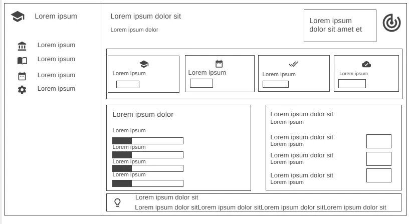
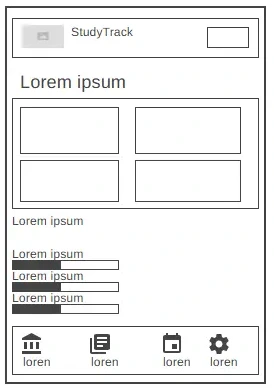

Site Name
StudyTrack
The name StudyTrack combines with the ideas of studying and tracking. It represents the main purpose of the website which is helping students organize their studies and track their tasks, goals and academic progress
Optional domain: studytrack.org
Site Purpose
The purpose of the StudyTrack website is to provide students with a simple and organized way to manage their studies and monitor their academic progress.
Scenarios
1 - student has several assignments for different subjects and wants to know which assignments are still pending and which ones are already being worked on. How can StudyTrack help the student organize these tasks and monitor their status?
2 - A student wants to know how much progress they have made in each subject and identify which subjects need more attention. How can StudyTrack help?
3 - A student is having difficulty maintaining good study habits and wants to find practical study advice. Where can the student find this information?
Color Scheme
Primary Color:
Navy Blue:
Navigation/sidebar,main headings
Secondary Color:
Blue: #2563EB
Primary buttons,Links,Progress bars.
Background Color:
Light Gray: #F3F4F6
Main page backgrounds,Dashboard areas
White: #FFF
Cards,forms,input,main content areas
Typography
Primary Font: Inter
Page titles,headings,body text
Secondary Font: sans-serif
Navigation links
Desktop view

Mobile view
